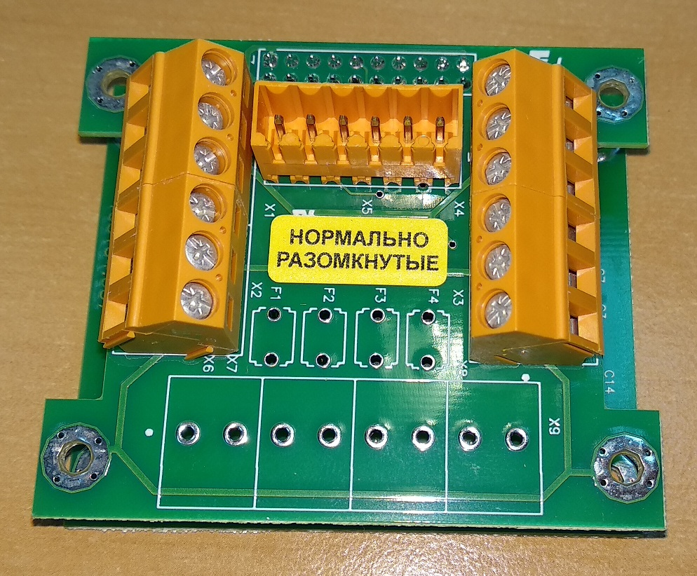

Прошивка сигнализатора

- Подключить комплект плат к компьютеру через USB адаптер.
- При подключении замкнуть два контакта на нижней плате
- Шить через Flip
 Желтый и зеленый провод подключаются нестандартно (наоборот)
Желтый и зеленый провод подключаются нестандартно (наоборот)

- Выбрать AT89C51ED2
- RS232 ⇛ Выбрать порт
-
Выбрать прошивку. Прошивка — 1121 Signalizator. Есть две версии — sig1121_RAZOMKNUTYE.hex(06.12.2013) и sig1121_ZAMKNUTYE.hex(04.09.2015), если версия не задана конкретно, то шьется 13-я (Razomknutie)
- Выбрать Erase и Programm
- Run
- После завершения процесса прошивки выбрать Level2 и снять BLJB
- Disconnect
- Поставить на плате метку о прошивке 